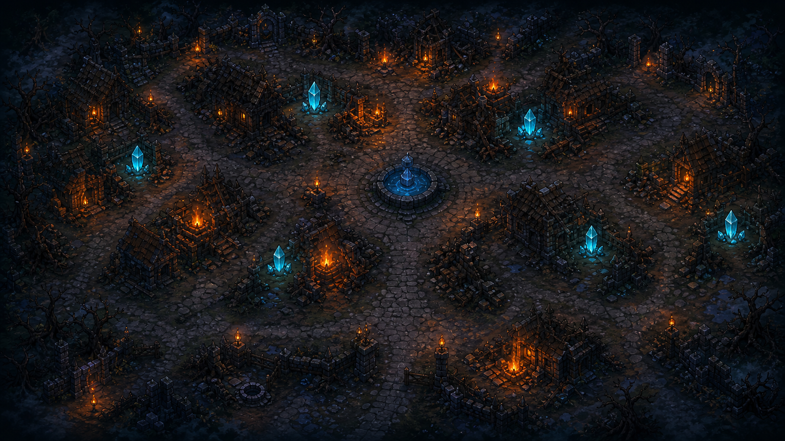
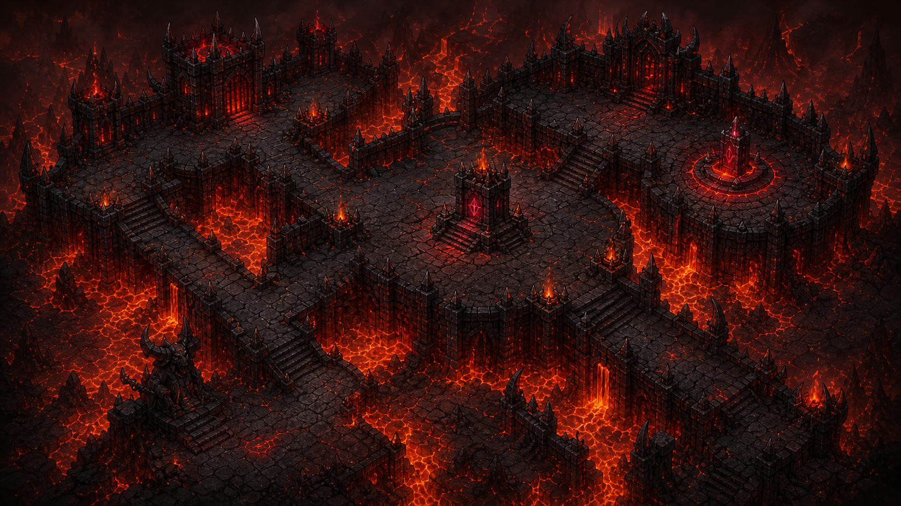

Conceito e Premissa
O Reino de Véspera
Arcane Dead é um RPG roguelike tático por turnos onde Aster Vhal, o Necromante do Véu, rompeu os três selos primordiais da magia: a Chama, a Geada e a Pestilência.
Lyra, a Cartógrafa Cega, guia os únicos três magos sobreviventes através das rotas dos mortos. Desenvolvido com uma arquitetura desacoplada em C# .NET 8, o projeto oferece uma experiência completa no Terminal Console e no Navegador Web 2D (Blazor / Phaser).


De Onde Veio a Ideia: Referências e Inspirações
Darkest Dungeon
Atmosfera fúnebre opressiva, punição severa de estados alterados (queimadura, sangria) e peso em cada decisão.
Vampire Survivors
Progressão rápida de poder, evolução exponencial de magias e sentimento constante de sobrevivência contra hordas.
Diablo & Dark Fantasy
Estética medieval gótica, selos arcanos corrompidos, grimórios ancestrais e chefes de mapa colossais.
Slay the Spire
Combate em turnos legível, telegrafia clara de ações do inimigo e sinergia de atributos e relíquias.
Identidade Visual & Direção de Arte
A linguagem estética de Arcane Dead foi construída para evocar um antigo grimório de feitiçaria sombria. Cada elemento visual tem propósito: tons abissais para o reino dos mortos, roxo para a corrupção do véu e ouro antigo para a centelha de magia pura.

Paleta de Cores Oficial do Projeto (Clique para Copiar o HEX)
Os Três Magos & Seus Selos Elementais


IGNIS
- Estilo: Dano massivo direto, explosões e Queimadura.
- Passiva: Intensidade da Chama (+dano quanto menor a vida).
- Magias: Faísca, Chama Crescente, Manto de Brasas, Inferno Arcano.


NIVOR
- Estilo: Controle de grupo, escudos arcanos e Congelamento.
- Passiva: Espessura do Gelo (+defesa acumulativa a cada bloqueio).
- Magias: Estilhaço de Gelo, Prisão Glacial, Barreira de Nivor, Zero Absoluto.


MORTIS
- Estilo: Dreno de vida, acúmulo de Veneno e enfraquecimento.
- Passiva: Carga Necrótica (+poder conforme os status do alvo).
- Magias: Toque Pútrido, Nuvem Tóxica, Pacto Fúnebre, Colheita de Almas.
Os Três Chefes de Mapa & Ambientações


General de Cinzas
🔥 Rota da Chama · Forja RubraMonstro encouraçado em magma que entra em frenesi explosivo ao cair abaixo de 50% de HP.


Vigia Congelado
❄️ Rota da Geada · Mina de CristalEntidade de gelo milenar que congela o solo e invoca estalactites pontiagudas perfurantes.


Colosso Decomposto
☠️ Rota da Pestilência · Cemitério TorcidoAmálgama gigante de ossos e miasma pútrido que drena vida e infecta o mago com veneno.
Desafio de Design: Coerência Visual Multiplataforma
Harmonia visual entre interfaces: Transpusemos a mesma identidade sombria entre o Terminal Console (paleta ANSI 24-bit e molduras Unicode), o Windows Forms (bitmaps GDI+ de alta resolução) e a Web 2D (Blazor / Phaser) (animações e spritesheets recortados pixel a pixel). O jogador vivencia o mesmo universo em qualquer tela.
Mecânicas de Combate & Exploração
1. Triângulo Elemental
Fogo vence Pestilência (1.5x), Pestilência vence Geada (1.5x) e Geada vence Fogo (1.5x). Se atingir o elemento desfavorável, o dano cai para 0.75x.
2. Estados Alterados
Objetos polimórficos de status: Queimadura (dano por rodada), Congelamento (perda de ação) e Veneno (dano cumulativo progressivo).
3. Passivas Únicas
Cálculos exclusivos: Ignis bate mais forte com vida baixa, Nivor acumula barreira de gelo e Mortis drena poder dos status no adversário.
4. Transição de Chefes
Ao cair abaixo de 50% de vida, cada chefe entra em modo de fúria, alterando o padrão da IA e telegrafando ataques devastadores.
Rotas & Exploração de Mapa em Grade

Cemitério Torcido
Terrenos pantanosos, névoas venenosas e o temido Colosso Decomposto.

Mina de Cristal
Geadas perpétuas, quartzo arcano cortante e o Vigia Congelado.

Forja Rubra
Fortaleza vulcânica, rios de lava e o titânico General de Cinzas.
Do Conceito ao Jogo: Arquitetura POO
Hierarquia de Classes & Polimorfismo Real
Centraliza vida, velocidade, defesa, cálculo de dano recebido e a lista polimórfica de EfeitoEstado.
- Gerencia Mana e Níveis (1 a 30)
- Lista de
HabilidadeeItem - Especializações: Ignis, Nivor, Mortis
- IA de Ação:
DecidirAcao() - Entrega de Recompensas e XP
- Monstros Comuns e Chefes de Fase
IUsavel: Implementada por Habilidade e por Item (sem classe pai comum).IRecompensavel: Implementada por Inimigo e por BauArcano.IControladorTurno: Desacopla as ações do Jogador humano e do Robô/IA do motor de turnos.
Arquitetura Limpa em 3 Camadas
✂️ Decisão de Engenharia: Corte Consciente de Escopo
"No GDD inicial tínhamos 11 mapas e dezenas de magias. Reduzir para 3 rotas completas e balanceadas (Cemitério, Mina e Forja) foi uma decisão madura de projeto para garantir estabilidade absoluta e polimento visual na entrega final."
Como foi o Processo do Grupo
Transparência técnica: um balanço sincero do que funcionou, onde o projeto demandou mais esforço e o que aprendemos durante o desenvolvimento.
- Separação de Camadas: A biblioteca central
ArcaneDeadpermitiu que um membro fizesse a Web enquanto outro refinava o Console e o balanceamento. - Ciclo Elemental Balanceado: O triângulo Fogo-Gelo-Pestilência garantiu variedade tática sem estratégia invencível.
- Git & Branches: Organização por branches impediu perdas de código.
- Sincronização de Turnos: O console era síncrono; adaptar para animações assíncronas no Phaser exigiu refatoração de contratos.
- Recorte de Spritesheets: Ajustar frames de ataque, cast e morte para alinhar perfeitamente com a interface demandou muito tempo de arte.
- Estados Combinados: Múltiplos status simultâneos geraram casos de borda que foram corrigidos nos testes.
- Árvore de Talentos: Sistema de talentos permanentes desbloqueados com almas corrompidas.
- Nova Classe (Mago do Véu): Um quarto herói com elemento arcano neutro e magias de distorção temporal.
- Modo Cooperativo Local: Partidas em dupla contra hordas massivas.
Integrantes do Projeto Arcane Dead
Gabriel
Alex
Gabriel

Repositório Oficial do Arcane Dead
Código-fonte completo em C# .NET 8, documentação de arquitetura, GDD, diagramas de classe em Mermaid e executáveis prontos para rodar.